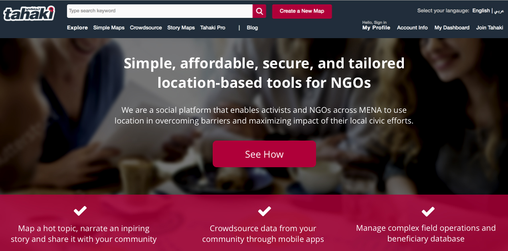

Top 3 Technologies to increase your non-profit organization visibility in the MENA region.
Civil Society Organization that needs to make social impact and raise money need to have tools to visualize its work making it more attractive, clean and interactive to communicate vision and messages. Visual communication is the most effective way to explain complex concepts and a most modern mediums to draw attention and increase awareness about civic causes.
We’ve done some research and come up with the top 3 technologies to increase the non-profit visibility through visualization tools.
present.me: Use video to create presentations
present.me is an easy to use recording tool that can be used along with powerpoint presentation to present topics. This tool can be used to communicate messages and create awareness about NGO causes.
presentme
tahaki.com: Turn your data into meaningful maps
tahaki.com is new map-enabled public social portal. Tahaki is a free and user friendly mapping platform that will allow your team to create meaningful maps that communicate your work to the public. Moreover, Tahaki will give you the tools to engage with your communities in conversations around NGO causes. Tahaki is multi-lingual. Tahaki is an enabler for you to see through a situation and simplify complexity using maps and is a data hub that is open for all users looking for maps about social issues in the MENA region
Piktochart: Create simple visualizations
Piktochart is an easy to use infographics editor, based on Drag-and-drop, point-and-click. No more frustrations over complicated design softwares, and no more expensive rates on hiring designers. The Piktochart’s editor gives you more room to think about designing and presenting your information.